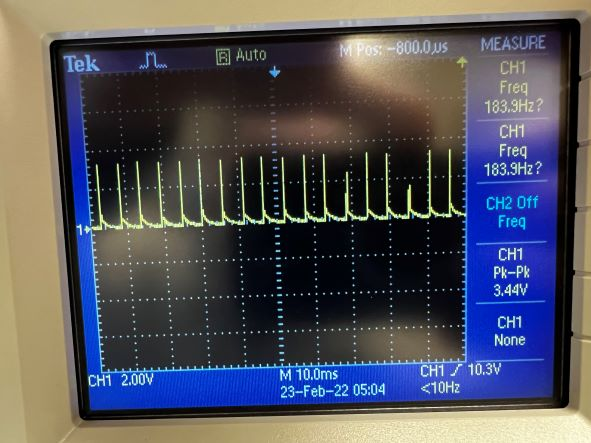

The purpose of this lab is to switch from controlling the car manually with a remote, to controlling the car with open-loop control using the Artemis Nano.
Setup
The motors for the car will be controlled using 2 motor controller modules. Each module has two h-bridges, and each module is connected to one motor. Doing this allows
use to double the current per motor. The left motor controller will be connected to pins 2 and 3 on the Artemis, and the right motor will be connected to pins 14 and 15.
These pins were chosen due to their convenient proximity and because they are both capable of producing a PWM signal.
Now that the board is on the car, it must be powered through a battery. Two separate batteries are used for the board and motor. The connections between the batteries, motor controllers,
and Artemis are all made using stranded wires, and data wires are routed to avoid being near the motors, as the motors create a lot of noise.
Lab Sections
Part 1 Initial Control:
To begin, a motor controller was tested using a bench power supply and an oscilloscope. The bench power supply is set to 3.7V to mimic the battery powering the motors.
The controller is then given a PWM signal using analogWrite(3, 25);. The image below show the oscilloscope reading.

The o-scope shows very short high spikes, followed by longer lasting lows. This is consistent with what would be expected with an analogWrite of 25.
Part 2: Driving
The car is driven using 4 analog writes, one for each h-bridge. I decided to make a "Car" class in C++ to keep things organized. A function forward(int v) is used in
to do drive the car forward, where v is the value written to the analogWrite. I noticed the right motors were driving faster than the left motors as well, so an offset of 25 was added
to the left motors. This seems to keep everything running at the same pace, but shouldn't be needed when PID is implemented.
To drive the car forward in a straight line, I wrote:
The first thing of note in this code is that ‘i’ starts at 75. This is about the lowest value I can write to a motor to make it rotate. This value was found experimentally.
All the writes are in a for loop with a short delay to slowly ramp up the motor as I didn't want the car to immediately take off. The video below shows the car driving down a straight line.
Part 3: Frequency Control
Lastly, I implemented the code from lab 1 to read the loudest frequency heard by the Artemis. I then programmed the Artemis to only drive when it has heard a frequency between
1400 and 1600 Hz, which is the frequency I tend to whistle at. This can be seen below.
An interesting effect I noticed is that the car itself generates a loud noise when it drives, which is then picked up by the Artemis. This may be useful for more sensor fusion,
as the frequency from the car may be proportional to the speed it's driving. I have yet to test this though.